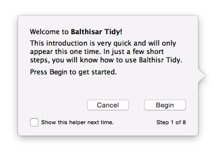
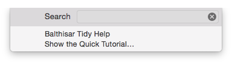
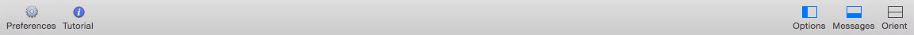

Show the Quick Tutorial
The Quick Tutorial is a brief walkthrough of a Balthisar Tidy document window that highlights its main features. Follow the steps below to activate the Quick Tutorial. 
-
The Quick Tutorial starts automatically the first time you use Balthisar Tidy.
-
You can also activate the Quick Tutorial by selecting Show the Quick Tutorial… in the Help menu. 
-
You can start the Quick Tutorial using the Tutorial button on the document window’s toolbar. 